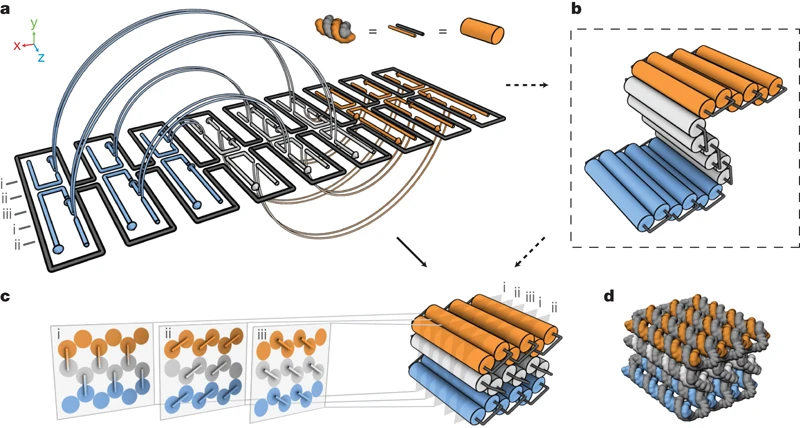
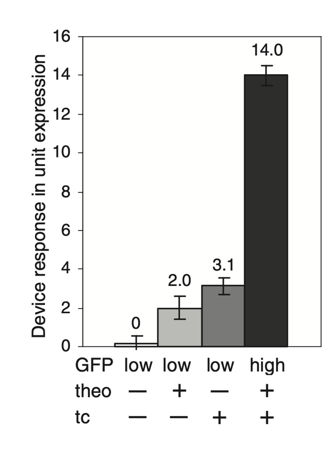
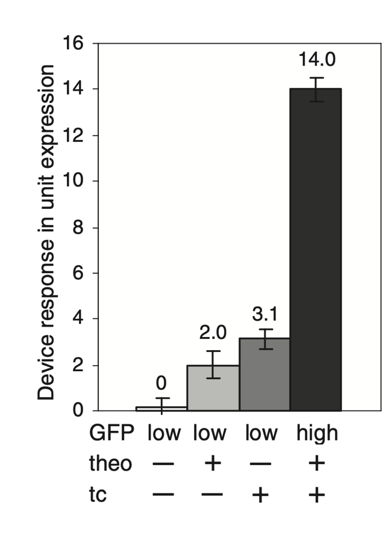

Engineering Biology?
mark.wallace@kcl.ac.ukWhat's in the parts bin?

Droplet Interface Bilayers
DNA legos

{kind=link}
DNA origami
Designing new proteins
RNA logic

 

Oscillators & Clocks

What is the Future Impact of Engineering Biology?
- Biodegradable plastics
- Bioactive glasses
- Alternative agrichemicals
- Embedded bio-diagnostics
- Cell-free chemical bio-manufacturing
- Responsive therapeutics
- Engineered enzymes
What is crucial for the development of the U.K.’s engineering biology industry is the training of many more engineers, mathematicians and computer scientists with an understanding of biology.
Leptihn, S. et al. Constructing droplet interface bilayers from the contact of aqueous droplets in oil. Nat Protoc 8, 1048–1057 (2013).
Maglia, G. et al. Droplet networks with incorporated protein diodes show collective properties. Nature Nanotech 4, 437–440 (2009).
Dietz, H., Douglas, S. M. & Shih, W. M. Folding DNA into Twisted and Curved Nanoscale Shapes. Science 325, 725–730 (2009).
Douglas, S. M. et al. Self-assembly of DNA into nanoscale three-dimensional shapes Science 459, 414-418 (2009).
Anishchenko, I. et al. De novo protein design by deep network hallucination Nature 600, 547-552 (2021).
Mukherji, S. & van Oudenaarden, A. Synthetic biology: understanding biological design from synthetic circuits Nat Rev Genet. 10 859–871 (2009).
Win, M. N. & Smolke, C. D. Higher-Order Cellular Information Processing with Synthetic RNA Devices Science 322 456-60 (2008).
Engineering Biology, a priority for Growth. Royal Academy of Engineering Report (2019).
Engineering Biology for the UK; a Resource to help Build Back Better. EBLC (2021).